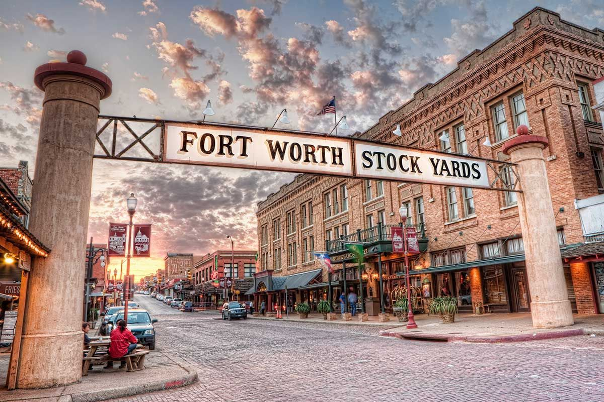

Texas


^Some of Our hot ticket Locations. (Dallas, Fort Worth and San Antonio).^
Texas is a place of many places to see! If your interested in a rich history
or a plethora of five star cuisine and hotel services. Texas is the place for you!